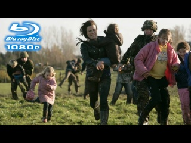
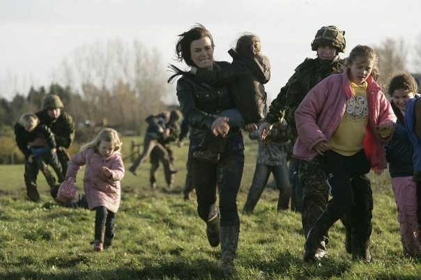

Весь 3-й сезон (5 серий)
 | Весь 3-й сезон (5 серий) |
Day Five
Дата выхода: 10 июля 2009
Формат: 60-минутный эпизод
| Варианты озвучек: | * Разные: смотрите по инструкции |
|---|---|
| Скачивание и просмотр: |
Торчвуд проиграл, и Гвен Купер осталась одна. Страна скатывается в анархию, и пригород Кардиффа становится местом, где происходит сражение за будущее человечества.
